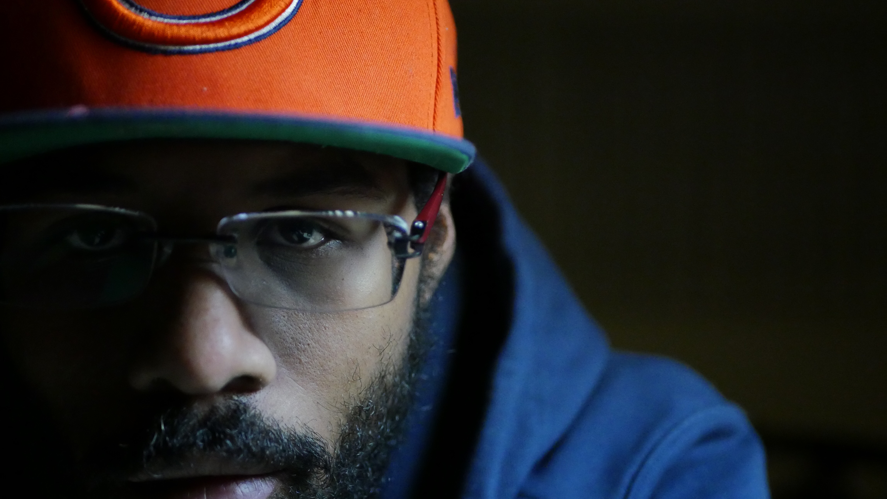

Learn to say No, unless it's a Hell Yeah.
CASADARO
My mom bought my first computer for fifty dollars from a guy named Roger Grondahl in 1995 after moving from Chicago to Anchorage, Alaska.
I lived most of what you might hear in a
gangsta rap song, yet here I sit. If you're Roger, thanks, if you know Roger tell him I said thanks.
The computer my mom bought from Roger was an IBM PS2 286 with a monochrome display,
30 megabyte hard drive, and 512 kilobytes of RAM. Roger and his wife Julie literally
lived on coffee and cigarettes and I don't think I ever saw them eat anything other than potatos.
They had two kids and the entire family was addicted to computers and everything computer related, truly amazing people.

The IBM 286 didn't come with a modem, so getting on the internet was impossible. When I had enough money, Roger sold me an IBM 8080. I would use the 8080 to dial into Roger's BBS machine where I would mainly ask him questions about how to do things in DOS. He eventually gave me a book on DOS that I would go on to never read. I would also use the 8080 to dial into the Anchorage public library. This is how I would get on the internet. After using 30 floppy disks to install windows 3.1 on the PS2 I was able to use a mouse and see images, but if I wanted to see images from the internet I would have to download them using the 8088 and transfer them to the PS2 using a program called LapLink and a special cable that was near impossible to find.

When I saved more money I was able to buy a computer I found in the newspaper.
The computer was an AT&T something or other that I bought from a woman with a cat.
I'm bringing up that cat because I'm allergic to cats and using that computer was slowly suffocating me. I spent countless hours in front of that computer struggling to breathe and pecking away at the keyboard. Later on I had an aunt give me $1,400 to build her a machine. I used that money to build two machines and kept one for myself -- not cool, I've regretted it ever since.
After high school I joined the Army because my girlfriend at the time wanted to join the Army. She hated it and got out. I really liked it and stayed for another 15 years and here I am now!
The first thing the Army does is condition your mind and body.
Some internalize the lessons and become leaders, some remain followers, then there are some that end up like me. Questioning everything. I started looking for answers anywhere I could find them. Anyone that I would talk to me for more than 10 minutes I would pick their brains clean. Who are you, why are you here, what do you care about. This led me to start reading, and listening and watching. In 15 years, I met maybe a hand full of people that were doing what they really wanted to do. The Army taught me self-reliance, intestinal fortitude, and perseverance. I learned to accept responsibility for everything that happens to me, to never quit, to never accept defeat. I learned to think! There is a solution to every problem, a cause to every effect; excuses are just excuses.
For example, If someone ones to become a web developer, programmer, coder, whatever we want to call it... All they need is a plan, a process, commitment, and a willingness to never quit.
She who will not be denied, won't be denied.
Right now I'm interested in developing a vast understanding of how to solve logical problems using JavaScript and being able to rapidly prototype, deploy, and market test products.
The easiest and fastest way to deploy and test a concept is via the internet.
JavaScript is the language of the internet, and has a low barrier to entry.
It's confusing at times but in its own way it forces the thinking developer to learn
all these other things that they may have never considered.

I read a lot of books. If I don't understand what's going on in the book I go to YouTube and watch videos until I understand. YouTube videos and Google lead all kinds of places. This is how I found freeCodeCamp and Colt Steele's Web Dev Bootcamp on Udemy. When I signed up for freeCodeCamp I was led to Gitter, where I can ask all kinds of programming questions.
I have had the good fortune of arriving at a place where little of what I do feels like work to me.